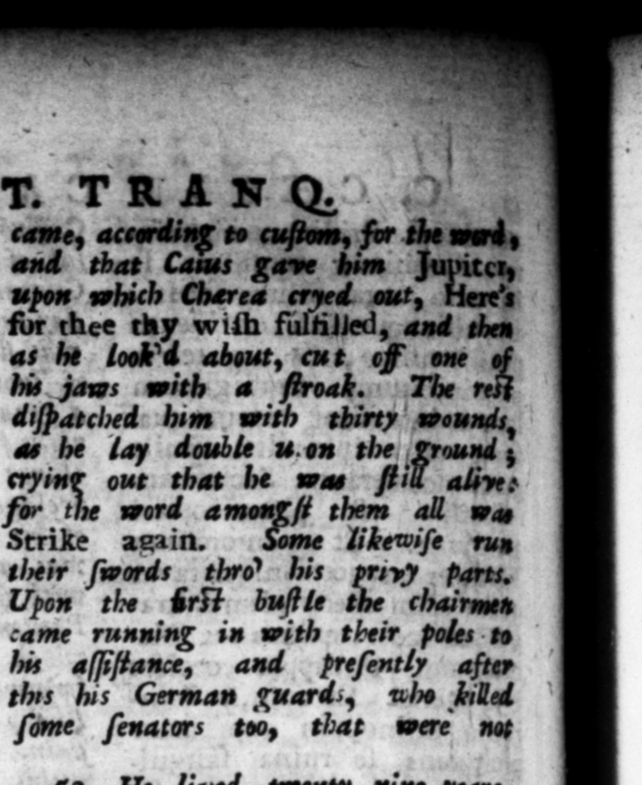

reſpicientique maxi ratum; ictu Aide. Jacentem, contractiſque membris clamitan tem ſe vwere, ceteri vulam exclamaſle, neribus triginta confecerunt. Nam wh erat omnium, ete. am etiam per x; 19 yon adegerunt. Ad primum tumultum lecticarii cum aſſeribus in auxilium accurrerunt : mox Germani corporis cuſtodes, ac nonnullos ex vribus, h irators, and ſome ſenators too, | 2 "in lar. ver ejus clam in hortos Lamianos aſportatum, & tumultuario rogo ſemiambnſtum levi ceſpite obrutum eſt. Poſtea ſorores ab exſilio reverſag erutum, Crematum, ſepultumque. Satis conſtat, prius quam. id fieret, hortorum cuſtodes umbris inquletatos: in ea quoque domo in qua occubuerit, nullam noctem fine aliquo tranſactam, donec ipſa domus incendio conumpta ſit. Periit una & uxor Ceſonia, 8 à cen3 & lia turione confo parieti illiſa. 60, Conditionem temporum m etiam per hæc exiſtimare quivis poſſit. Nam neque cxde vul ſtatim creditum eſt, Fuitque ſuſpi. cio, ab ipſo Cajo famam cædi: ſimulatam & emiſlam : ut eo pacto erga ſe hominum mentes deprehenderet. Neqʒ conjurati cuiquam imperium eltinavcrunt, Et ſenatus in aſſerenda libertate adeo conſenſit, ut COSS. primo non in curiam, quia Julia vocabatur, ſed in Capitolinm e. uE r 9. He lived twenty nine years and reign'd three, beſides ten months, and eight days. His body was pri / wately carried into the Lamian Gat» dens, where it was half burn: upon a file haſtily raiſed, and then as careleſly buried. It was afterwards taken up again by his ſiſters, u their return from bani ment, fepaſſed in the beſe where bo was ſlain, without ſome terrible fright on other, till it was burnt quite down, His wife Ceſonia was killed with him, being ſtabbed 4 centurion, and his hter had ber brains knocked out again a wall. C0. Any one may eaſily make an eſtimate of the mi 2. U condition ef thoſe times by theſe enſuing cirrumſtances, For after his death was made blick, it was not P 3546: credited, alous that the le were 3 re bs bing Killed bad been þ A. and ſpread by bin ».ſelf,, on purpoſe ta diſcoyer bow they 2 affeted towards him, Nor had the conſpirators pitched 2 any one to ſucceed him, And e ſenate were ſo unanimous in their reſolution t aſſert the liberty of their country, that the conſuls aſſembled .. them at firſt not in the uſual place convocarent
